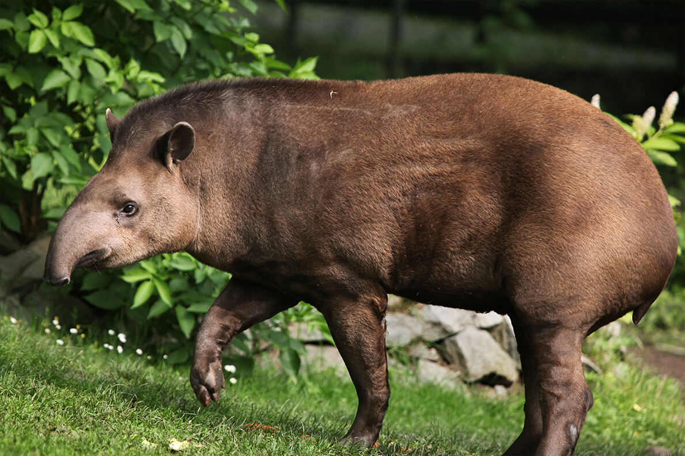
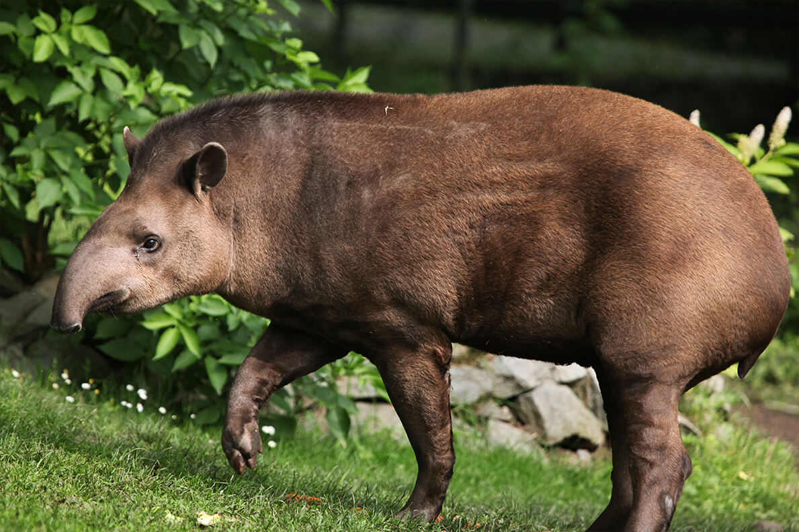

El tapir es un gran mamífero herbívoro con un cuerpo robusto y cortas patas robustas. Es conocido por su nariz alargada y prensil, similar a un pequeño trompa. Los tapires son principalmente nocturnos y son excelentes nadadores y buceadores. Habitan en selvas y bosques húmedos de América Latina y el sudeste asiático.
Dieta
- Frutas
- Hojas
- Ramas
- Brotes
Depredadores
- Jaguares
- Tigres
- Cocodrilos
- Anacondas
- Humanos